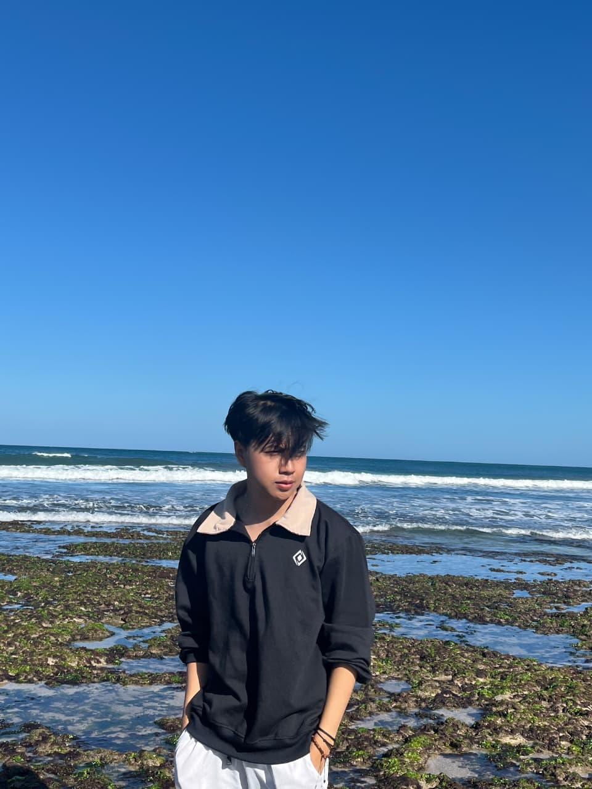
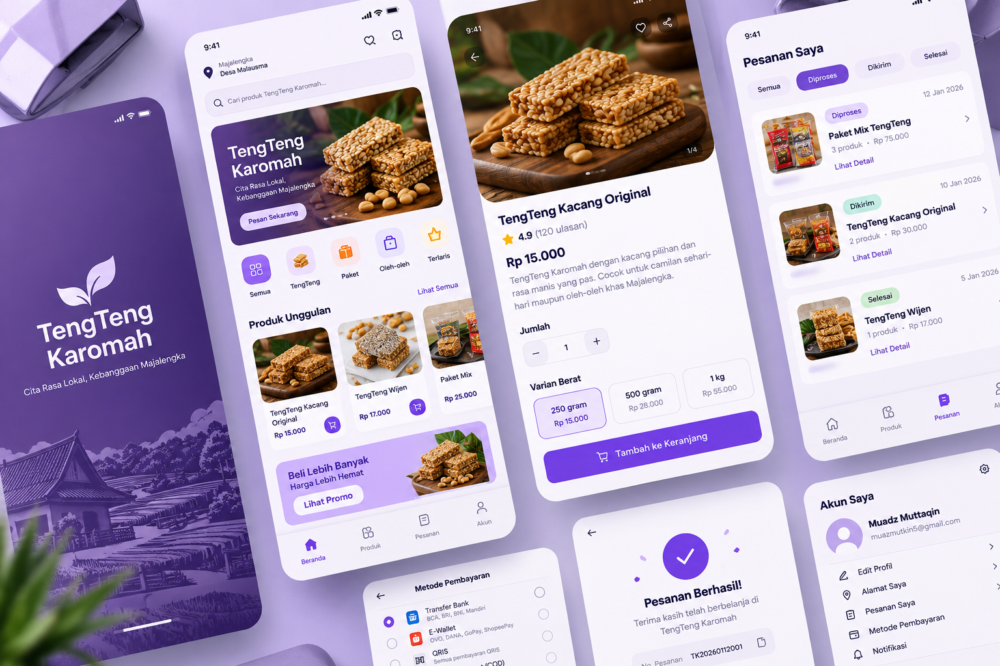
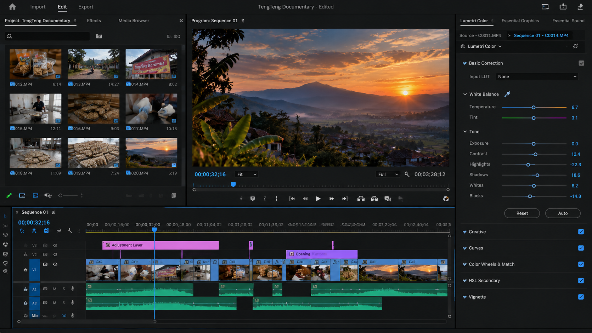
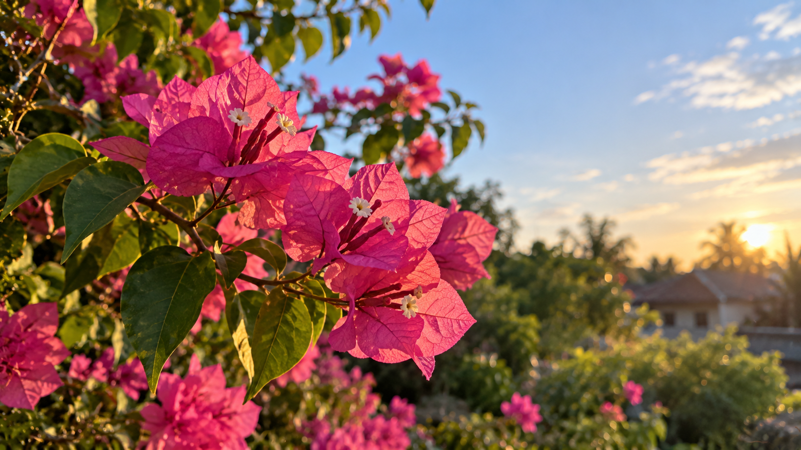

UI/UX Design
Merancang antarmuka dan pengalaman pengguna yang jelas, konsisten, dan mudah dipahami.
Interface & ExperienceHalo, saya Muadz Muttaqin. Saya tertarik pada UI/UX Design, fotografi, videografi, dan video editing untuk menciptakan pengalaman visual yang menarik dan bermanfaat.

UI/UX Design · Photography · Videography
Saya adalah kreator digital yang senang mengeksplorasi ide melalui desain dan media visual. Bagi saya, karya yang baik bukan hanya terlihat menarik, tetapi juga mampu menyampaikan pesan dengan jelas.
Saya terus mengembangkan kemampuan dalam desain antarmuka, fotografi, videografi, dan penyuntingan video melalui proyek kreatif serta pengalaman yang saya jalani.
Mari berkolaborasi ↗Menggabungkan ide, visual, dan kreativitas dalam setiap proses.
Merancang antarmuka dan pengalaman pengguna yang jelas, konsisten, dan mudah dipahami.
Interface & ExperienceMengabadikan momen dan menyampaikan cerita melalui komposisi serta sudut pengambilan gambar.
Visual StorytellingMengembangkan ide menjadi video dokumenter dan karya audiovisual.
Video ProductionMenyusun footage, ritme, dan alur cerita menjadi video yang menarik.
Editing & StorytellingBeberapa bidang kreatif yang saya tekuni dan kembangkan.

UI/UX DESIGN ↗Perancangan konsep desain antarmuka untuk kompetisi.

VIDEOGRAPHY ↗Karya audiovisual untuk keperluan kompetisi.

PHOTOGRAPHY ↗Eksplorasi komposisi dan cerita visual.
Galeri ini dapat diperbarui dengan hasil karya asli.
Setiap pengalaman menjadi kesempatan untuk memahami proses kerja, beradaptasi, dan mengembangkan kemampuan diri.
Pengalaman magang di bidang Human Resources Development dalam lingkungan kerja profesional.
Pengalaman magang di Samseat Majalengka. Rincian tugas dapat ditambahkan sesuai tanggung jawab yang pernah dijalankan.
Mengembangkan karya desain antarmuka dan audiovisual untuk kompetisi.
Terbuka untuk diskusi, kolaborasi kreatif, dan kesempatan proyek yang menarik.
Hubungi saya ↗